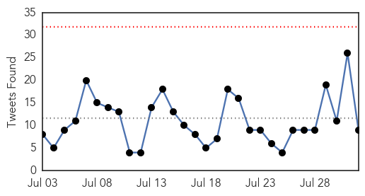
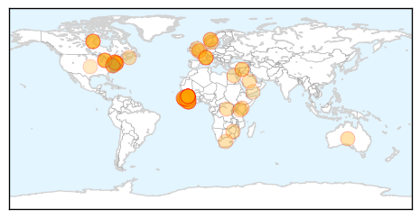
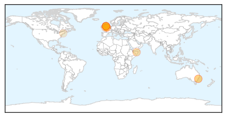
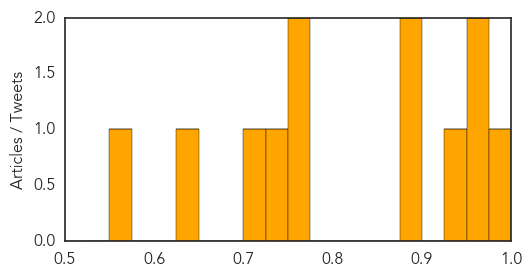

Ebola
30-Day Web Trend
1 alerts, 0 warnings

30-Day Twitter Trend
0 alerts, 0 warnings

Article Locations
Article Confidences

Top Articles:
- 1.000
- NYC Doctor, Who Survived Ebola, Says Experimental Vaccine Could Be 'A Way Forward'
- 1.000
- The epidemic's timeline
- 1.000
- First Week With No New Ebola Cases
- 1.000
- Ebola Vaccine 100% Effective During Trial Phase?
- 1.000
- World Health Organization reports progress on Ebola vaccine
- 1.000
- All That You Would Want to Know About the Deadly Ebola Virus Disease
- 1.000
- The Truth About Ebola - By: Jones Nhinson Williams, Founder of the New Liberia Foundation
- 1.000
- Ebola Vaccines Hurdle Tests, Sufferers to See the Light at the End of Tunnel Soon
- 1.000
- Ebola: 500+ Quarantined in Once-Cured Sierra Leone Village
- 1.000
- Ebola outbreak: Guinea health team killed
- 1.000
- Experimental Ebola Vaccine shows Promise
- 0.999
- Experimental Ebola vaccine could stop virus in West Africa
- 0.999
- A newly developed vaccine against the deadly Ebola virus is
- 0.999
- Breakthrough in the quest for Ebola vaccine
- 0.999
- Experimental Ebola vaccine could stop virus in West Africa
- 0.999
- Vaccine against Ebola proves successful during trial in Guinea
- 0.999
- Trials show new Ebola vaccine is ‘highly effective’
- 0.999
- Doctor Who Survived Ebola Says Experimental Vaccine ‘A Way Forward’
- 0.999
- Made-in-Canada Ebola vaccine effective
- 0.999
- Guinea Plans Ebola Inoculation Campaign After Vaccine Success
- 0.999
- NYC Doctor, Who Survived Ebola, Says Experimental Vaccine Could Be 'A Way Forward'
- 0.998
- Ebola vaccine success brings hope for end to threat of deadly virus
- 0.998
- Breakthrough in quest for Ebola vaccine
- 0.998
- Breakthrough in Ebola vaccine
- 0.998
- Ebola vaccine highly effective in Guinea testing; 100% recovery found in people treated quickly
- 0.998
- Ebola vaccine 100% effective; rapid R&D is hailed as a model for other diseases
- 0.998
- Indiablooms - First Portal on Digital News Management
- 0.997
- Ebola vaccine appears to be highly effective, could be 'a game-changer'
- 0.997
- Vaccine Success Holds Hope For End To Deadly Scourge Of Ebola
- 0.997
- It's The Beginning Of The End For Ebola. A Vaccine Successfully Passed A Field Trial In Guinea
- 0.997
- New Ebola Vaccine Kills Virus in Monkeys
- 0.996
- Breakthrough in quest for Ebola vaccine – BorneoPost Online
- 0.996
- Ebola Vaccine Developed With '100 Percent Success Rate'
- 0.996
- GUINEA – Vaccine ‘game-changer’
- 0.996
- New Ebola Vaccine Deemed ‘Highly Effective,’ Says WHO
- 0.995
- Norwegian-lead Ebola vaccine study shows promising results in Guinea
- 0.995
- Vaccine success holds hope for end to deadly scourge of Ebola
- 0.994
- Sierra Leone Welcomes Ebola Vaccine Trial Outcome
- 0.994
- NewLink Genetics : Vaccine success holds hope for end to deadly scourge of Ebola
- 0.993
- Vaccine success holds hope for end to deadly scourge of Ebola
- 0.992
- Ebola vaccine shows 'promising' results
- 0.991
- Ebola Vaccine Is 'Potential Game-Changer'
- 0.990
- Effective Ebola vaccine may be here
- 0.989
- Kenya mulls granting refuge to chimps from Ebola-hit Liberia
- 0.988
- Kenya mulls granting refuge to chimps from Ebola-hit Liberia
- 0.986
- Ebola Vaccine Discovered?
- 0.986
- CDC's top modeler courts controversy with disease estimate
- 0.986
- Ebola Vaccine Shows 100% Efficacy in Trials, the End of the Deadly Virus Could be Near
- 0.986
- CDC’s top modeler courts controversy with disease estimate
- 0.986
- CDC's top modeler courts controversy with disease estimate
Showing top 50 articles...
Top Tweets:
- 0.984
- World Health Organization reports progress on Ebola vaccine - MSNBC http://t.co/WZKwmtY3D4 ebola EVD
- 0.958
- How Sierra Leone's Most Famous Journalist Helped NPR Get The Ebola Story - NPR http://t.co/OV98DcwJJU ebola EVD
- 0.955
- Experimental Ebola vaccine could stop virus in West Africa, study says - http://t.co/d5MGKGg3kf http://t.co/hE3rPjugYa ebola EVD
- 0.942
- Kenya mulls granting refuge to chimps from Ebola-hit Liberia - Yahoo News http://t.co/LxFwpnUZsu ebola EVD
- 0.891
- A year later: Was Mecklenburg response to Ebola threat appropriate? - Charlotte Observer http://t.co/LPV6we8v6y ebola EVD
- 0.878
- One Year Later, Emory's Medical Staff Looks Back On The Ebola Crisis - Huffington Post http://t.co/AcoU3RwcF2 ebola EVD
- 0.868
- Experimental Ebola Vaccine Tested in Guinea Shows Promise, Report Says - New York Times http://t.co/qiMn4hUz37 ebola EVD
- 0.868
- Experimental Ebola Vaccine Tested in Guinea Shows Promise, Report Says - New York Times http://t.co/T5GrZ7HuO2 ebola EVD
- 0.795
- RT: Here's a free infographic about Ebola virus disease progress in west Africa. Full PDF here http://t.co/UsLlKSLijB http://t.…
- 0.711
- Ebola breakthrough after trial success - Sky News Australia http://t.co/zD8fAIKcPy ebola EVD
- 0.670
- How Sierra Leone's Most Famous Journalist Helped NPR Get The Ebola Story - NPR http://t.co/307WhOMtaY
- 0.539
- Delighted to review epi w. FETP grads from DRC. United to stop Ebola and protect health. http://t.co/JKJ6O0nr7I
Meningitis
30-Day Web Trend
0 alerts, 0 warnings

30-Day Twitter Trend
1 alerts, 0 warnings

Article Locations
Article Confidences
Top Articles:
- 0.987
- New Meningitis Strain in Africa Brings Call for More Vaccines
- 0.967
- New meningitis vaccine to be offered to UK teenagers and students
- 0.955
- Students offered vaccine against deadly meningitis strain
- 0.936
- Sydneysiders look out for symptoms of meningococcal disease after university student diagnosed
- 0.886
- New meningitis vaccine for freshers in Scotland
- 0.882
- Students targeted in MenW vaccination programme
- 0.761
- Student who lost ends of her fingers AND toes to meningitis urges others to get vaccinated
- 0.755
- Chief Medical Officer calls on young people to have lifesaving meningitis vaccine
- 0.738
- Family of St Ives teenager who died from Meningitis launch vaccine campaign
- 0.725
- University of Technology Sydney student hospitalised with meningococcal disease
- 0.636
- Family who lost son to Meningitis launch vaccine campaign
- 0.554
- Connecticut sees first indications of West Earth virus this season
Top Tweets:
-
No tweets found for Aug 01, 2015